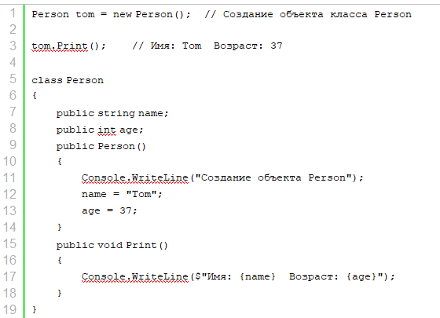
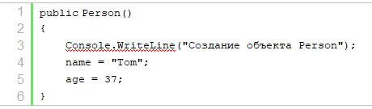
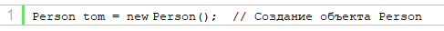
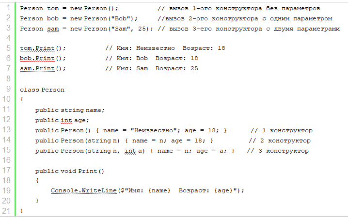
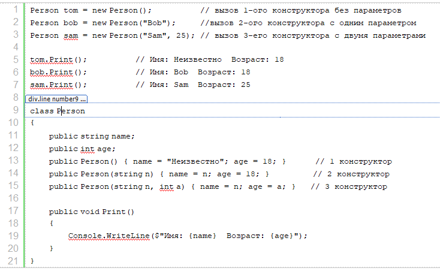
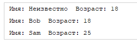
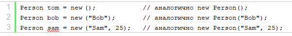

| Тема 2. Конструкторы. | ||
| Назад | ||
Создание конструкторовВ теме для создания объекта использовался конструктор по умолчанию. Однако мы сами можем определить свои конструкторы. Как правило, конструктор выполняет инициализацию объекта. При этом если в классе определяются свои конструкторы, то он лишается конструктора по умолчанию. На уровне кода конструктор представляет метод, который называется по имени класса, который может иметь параметры, но для него не надо определять возвращаемый тип. Например, определим в классе Person простейший конструктор:
 Итак, здесь определен конструктор, который выводит на консоль некоторое сообщение и инициализирует поля класса.
 Конструкторы могут иметь модификаторы, которые указываются перед именем конструктора. Так, в данном случае, чтобы конструктор был доступен вне класса Person, он определен с модификатором public. Определив конструктор, мы можем вызвать его для создания объекта Person:

В данном случае выражение Подобным образом мы можем определять и другие конструкторы в классе. Например, изменим класс Person следующим образом:

 Теперь в классе определено три конструктора, каждый из которых принимает различное количество параметров и устанавливает значения полей класса. И мы можем вызвать один из этих конструкторов для создания объекта класса. Консольный вывод данной программы:
 Стоит отметить, что начиная с версии C# 9 мы можем сократить вызов конструктора, убрав из него название типа:

|
||
| Конспект подготовлен Бакулиным А. М. 2022 год. | ||